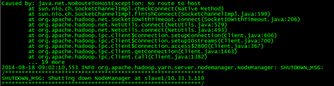

在Ubuntu_Centos上部署Hadoop
一、用虚拟机模拟三台服务器
创建三台虚拟机并分别设置其独立静态IP
1.1设置虚拟机网络连接方式
将虚拟机网卡和主机之间的方式设置为桥接模式

1.2设置静态IP
打开文件/etc/sysconfig/network-scrip/ifcfg-eth0 DEVICE=”eth0” BOOTPROTO="static" IPADDR=”本虚拟机静态IP” GATEWAY=”默认网关” NETMASK=”子网掩码” ONBOOT=”yes”
1.3重启网络服务命令
service network restart
二、添加Hadoop用户
2.1创建hhadoop用户组
 （ 在centos上需要将addgroup改为groupadd）
2.2创建hadoop用户
（ 在centos上需要将addgroup改为groupadd）
2.2创建hadoop用户
 （在centos需要将adduser改为useradd，并设置密码为hadoop）画
（在centos需要将adduser改为useradd，并设置密码为hadoop）画
 2.3给hadoop用户添加权限，打开/etc/sudoers文件
（centos可以直接使用vi代替gedit）
在root ALL=(ALL:ALL) ALL后添加hadoop ALL=(ALL:ALL) ALL
2.3给hadoop用户添加权限，打开/etc/sudoers文件
（centos可以直接使用vi代替gedit）
在root ALL=(ALL:ALL) ALL后添加hadoop ALL=(ALL:ALL) ALL

三、修改主机名
集群中需要给每台机器取个不同的名字。Ubuntu中机器名由 /etc/hostname文件决定。
3.1打开/etc/hostname文件
3.2回车后就打开/etc/hostname文件了，将/etc/hostname文件中的ubuntu改为你想取的机器名，如master、slave1、slave2。
3.3重启系统（reboot）后生效。
（如果是centos，则需要修改/etc/sysconfig/network文件）

四、修改host文件
将集群中各主机名对应的IP添加到每台主机的host文件中

五、添加无密码SSH服务
5.1安装openssh-server
（注：自动安装openssh-server时，可能会进行不下去，可以先进行如下操作：)
 更新的快慢取决于网速，如果中途因为时间过长中断了更新（ctrl+z），当再次更新时，会更新不了，报错为：“Ubuntu无法锁定管理目录（/var/lib/dpkg/），是否有其他进程占用它？“需要如下操作
更新的快慢取决于网速，如果中途因为时间过长中断了更新（ctrl+z），当再次更新时，会更新不了，报错为：“Ubuntu无法锁定管理目录（/var/lib/dpkg/），是否有其他进程占用它？“需要如下操作
操作完成后继续执行第1步 如果是centos则使用yum代替apt-get
5.2生成RSA对称密码 ssh-keygen -t rsa 回车后会在~/.ssh/下生成两个文件： id_rsa是私钥 id_rsa.pub是公钥 5.3进入~/.ssh/目录下，将id_rsa.pub追加到插头授权文件中 5.4本机测试 ( 注：当ssh远程登录到其它机器后，现在你控制的是远程的机器，需要执行退出命令才能重新控制本地主机。)
【切记】 SSH中密钥文件的权限值必须都设为600 sudo chmod 600 /home/hadoop/.ssh/ 六、节点间使用SSH连接 6.1将各节点的id_rsa.pub公钥拷贝到*各节点的authorized_keys内，就可以实现各节点之间的无SSH密码通讯
6.2测试连接

关于SSH的通讯原理，这里不做详述，有兴趣的话可以看看博客 http://qindongliang.iteye.com/blog/1958518 介绍的很详细的样子
七、安装JDK 我们选择的是jdk1.6.0_30版本,安装文件名为jdk-6u30-linux-i586.bin. 7.1复制jdk到安装目录 我们指定的安装目录是：/usr/local/java，先创建一个java文件夹
再将bin文件拷贝进去

7.2安装jdk
切换到root用户下
 （注：如果因忘记密码而认证失败，可以先修改root用户的密码，再执行）
运行jdk-6u30-linux-i586.bin
（注：如果因忘记密码而认证失败，可以先修改root用户的密码，再执行）
运行jdk-6u30-linux-i586.bin

（注：如果遇到权限问题，可以先更改jdk-6u30-linux-i586.bin权限）

更改权限后再执行上一步，当看到下图情况时，说明你安装成功了。

这时在/usr/local/java目录下就多了一个jdk1.6.0_30文件夹
7.3配置环境变量 （1）打开/etc/profile文件
（2）添加变量如下：
# /etc/profile: system-wide .profile file for the Bourne shell (sh(1))
# and Bourne compatible shells (bash(1), ksh(1), ash(1), ...).
#set java environment
export JAVA_HOME=/usr/local/java/jdk1.6.0_30
export JRE_HOME=/usr/local/java/jdk1.6.0_30/jre
export CLASSPATH=.:$JAVA_HOME/lib:$JRE_HOME/lib:$CLASSPATH
export PATH=$JAVA_HOME/bin:$JRE_HOME/bin:$JAVA_HOME:$PATH
（注：为了以后集群工作的方便，这里建议每台机器的java环境最好一致。）
一般更改/etc/profile文件后，需要重启机器才能生效。这里介绍一种不用重启使其生效的方法

（3）查看java环境变量是否配置成功

八、下载解压Hadoop
官网下载http://www.apache.org/dyn/closer.cgi/hadoop/core/
hadoop集群中每个机器上面的配置基本相同，所以我们先在master上面进行配置部署，然后再复制到其他节点。所以这里的安装过程相当于在每台机器上面都要执行。
【注意】：master和slaves安装的hadoop路径要完全一样，用户和组也要完全一致
解压文件到/usr路径下，并重命名
tar zxvf hadoop-2.2.0_x64.tar.gz
mv hadoop-2.2.0 hadoop
 （解压命令在Ubuntu是 tar -zxf xxx.tar.gz，centos是tar zxvf xxx.tar.gz）
九、Hadoop配置文件
9.1创建必要文件夹
在master本地文件系统创建以下文件夹：
~/dfs/name
~/dfs/data
~/tmp
注意文件所属用户及用户组。如果不在新建的用户组下面，可以使用chown命令来修改：（chmod和chown命令的用法http://www.aboutyun.com/thread-7675-1-1.html)
9.2这里要涉及到的配置文件有7个
~/hadoop-2.2.0/etc/hadoop/hadoop-env.sh
~/hadoop-2.2.0/etc/hadoop/yarn-env.sh
~/hadoop-2.2.0/etc/hadoop/slaves
~/hadoop-2.2.0/etc/hadoop/core-site.xml
~/hadoop-2.2.0/etc/hadoop/hdfs-site.xml
~/hadoop-2.2.0/etc/hadoop/mapred-site.xml
~/hadoop-2.2.0/etc/hadoop/yarn-site.xml
以上文件有些默认不存在的，可以复制相应的.template文件获得
9.3配置文件1：hadoop-env.sh
修改JAVA_HOME值（export JAVA_HOME=/usr/jdk1.7）
9.4配置文件2：yarn-env.sh
修改JAVA_HOME值（export JAVA_HOME=/usr/jdk1.7）
9.5配置文件3：slaves（这个文件里面保存所有slave节点）
写入以下内容：
slave1
slave2
9.6配置文件4：core-site.xml
（解压命令在Ubuntu是 tar -zxf xxx.tar.gz，centos是tar zxvf xxx.tar.gz）
九、Hadoop配置文件
9.1创建必要文件夹
在master本地文件系统创建以下文件夹：
~/dfs/name
~/dfs/data
~/tmp
注意文件所属用户及用户组。如果不在新建的用户组下面，可以使用chown命令来修改：（chmod和chown命令的用法http://www.aboutyun.com/thread-7675-1-1.html)
9.2这里要涉及到的配置文件有7个
~/hadoop-2.2.0/etc/hadoop/hadoop-env.sh
~/hadoop-2.2.0/etc/hadoop/yarn-env.sh
~/hadoop-2.2.0/etc/hadoop/slaves
~/hadoop-2.2.0/etc/hadoop/core-site.xml
~/hadoop-2.2.0/etc/hadoop/hdfs-site.xml
~/hadoop-2.2.0/etc/hadoop/mapred-site.xml
~/hadoop-2.2.0/etc/hadoop/yarn-site.xml
以上文件有些默认不存在的，可以复制相应的.template文件获得
9.3配置文件1：hadoop-env.sh
修改JAVA_HOME值（export JAVA_HOME=/usr/jdk1.7）
9.4配置文件2：yarn-env.sh
修改JAVA_HOME值（export JAVA_HOME=/usr/jdk1.7）
9.5配置文件3：slaves（这个文件里面保存所有slave节点）
写入以下内容：
slave1
slave2
9.6配置文件4：core-site.xml
<configuration>
<property>
<name>fs.defaultFS</name>
<value>hdfs://master:8020</value>
</property>
<property>
<name>io.file.buffer.size</name>
<value>131072</value>
</property>
<property>
<name>hadoop.tmp.dir</name>
<value>file:/home/hadoop/tmp</value>
<description>Abase for other temporary directories.</description>
</property>
<property>
<name>hadoop.proxyuser.aboutyun.hosts</name>
<value>*</value>
</property>
<property>
<name>hadoop.proxyuser.aboutyun.groups</name>
<value>*</value>
</property>
</configuration>
9.7配置文件5：hdfs-site.xml
<configuration>
<property>
<name>dfs.namenode.secondary.http-address</name>
<value>master:9001</value>
</property>
<property>
<name>dfs.namenode.name.dir</name>
<value>file:/home/hadoop/dfs/name</value>
</property>
<property>
<name>dfs.datanode.data.dir</name>
<value>file:/home/hadoop/dfs/data</value>
</property>
<property>
<name>dfs.replication</name>
<value>3</value>
</property>
<property>
<name>dfs.webhdfs.enabled</name>
<value>true</value>
</property>
</configuration>
9.8配置文件6：mapred-site.xml
<configuration>
<property>
<name>mapreduce.framework.name</name>
<value>yarn</value>
</property>
<property>
<name>mapreduce.jobhistory.address</name>
<value>master:10020</value>
</property>
<property>
<name>mapreduce.jobhistory.webapp.address</name>
<value>master:19888</value>
</property>
</configuration>
9.9配置文件7：yarn-site.xml
<configuration>
<property>
<name>yarn.nodemanager.aux-services</name>
<value>mapreduce_shuffle</value>
</property>
<property>
<name>yarn.nodemanager.aux-services.mapreduce.shuffle.class</name>
<value>org.apache.hadoop.mapred.ShuffleHandler</value>
</property>
<property>
<name>yarn.resourcemanager.address</name>
<value>master:8032</value>
</property>
<property>
<name>yarn.resourcemanager.scheduler.address</name>
<value>master:8030</value>
</property>
<property>
<name>yarn.resourcemanager.resource-tracker.address</name>
<value>master:8031</value>
</property>
<property>
<name>yarn.resourcemanager.admin.address</name>
<value>master:8033</value>
</property>
<property>
<name>yarn.resourcemanager.webapp.address</name>
<value>master:8088</value>
</property>
</configuration>
9.10将配置文件复制到其他节点
上面配置完毕，我们基本上完成了90%了剩下就是复制。我们也可以把整个hadoop复制过去（注意slaves文件不一样）
【注意】拷贝配置文件的时候修改文件所有者
sudo chown hadoop mapred-site.xml
【记得】最后检查一下
cat hadoop-env.sh
cat yarn-env.sh
cat slaves
cat core-site.xml
cat hdfs-site.xml
cat mapred-site.xml
cat yarn-site.xml
9.11在每台服务器内配置环境变量/etc/profile
export PATH=$PATH:/usr/local/hadoop/bin/
export PATH=$PATH:/usr/local/hadoop/sbin/
十、启动Hadoop
10.1格式化namenode
hdfs namenode –format
或则
hadoop namenode format
10.2启动hdfs
start-dfs.sh
此时在master上面运行的进程有：
namenode
secondarynamenode
slave节点上面运行的进程有：datanode
10.3启动yarn
start-yarn.sh
我们看到如下效果：
master有如下进程：

slave1有如下进程

此时hadoop集群已全部配置完成！！！ 十一、查看Hadoop的Web管理窗口 11.1 ResourceManager 介绍：运行在主节点master上 网址：http://master:8088/ 配置文件：yarn-site.xml
十二、运行实例WordCount
12.1 找到examples例子
在 /hadoop/share/hadoop/mapreduce下找到hadoop-mapreduce-examples-2.2.0.jar
12.2 运行前的准备工作
我们需要需要做一下运行需要的工作，比如输入输出路径，上传什么文件等。
①先在HDFS创建几个数据目录：
hadoop fs -mkdir -p /data/wordcount
hadoop fs -mkdir -p /output/
 新建文件inputWord
vi /usr/inputWord
新建完毕，查看内容：
cat /usr/inputWord
新建文件inputWord
vi /usr/inputWord
新建完毕，查看内容：
cat /usr/inputWord

目录/data/wordcount用来存放Hadoop自带的WordCount例子的数据文件，
任务的结果输出到/output/wordcount目录中。
②将本地文件上传到HDFS中：
hadoop fs -put /usr/inputWord /data/wordcount/
查看上传后的文件情况
hadoop fs -ls /data/wordcount
查看文件的内容
hadoop fs -text /data/wordcount/inputWord
12.3 运行WordCount例子
hadoop jar /usr/hadoop/share/hadoop/mapreduce/hadoop-mapreduce-examples-2.2.0.jar wordcount /data/wordcount /output/wordcount
可以看到控制台输出程序运行的信息：
aboutyun@master:~$ hadoop jar /usr/hadoop/share/hadoop/mapreduce/hadoop-mapreduce-examples-2.2.0.jar wordcount /data/wordcount /output/wordcount
14/05/14 10:33:33 INFO client.RMProxy: Connecting to ResourceManager at master/172.16.77.15:8032
14/05/14 10:33:34 INFO input.FileInputFormat: Total input paths to process : 1
14/05/14 10:33:34 INFO mapreduce.JobSubmitter: number of splits:1
14/05/14 10:33:34 INFO Configuration.deprecation: user.name is deprecated. Instead, use mapreduce.job.user.name
14/05/14 10:33:34 INFO Configuration.deprecation: mapred.jar is deprecated. Instead, use mapreduce.job.jar
14/05/14 10:33:34 INFO Configuration.deprecation: mapred.output.value.class is deprecated. Instead, use mapreduce.job.output.value.class
14/05/14 10:33:34 INFO Configuration.deprecation: mapreduce.combine.class is deprecated. Instead, use mapreduce.job.combine.class
14/05/14 10:33:34 INFO Configuration.deprecation: mapreduce.map.class is deprecated. Instead, use mapreduce.job.map.class
14/05/14 10:33:34 INFO Configuration.deprecation: mapred.job.name is deprecated. Instead, use mapreduce.job.name
14/05/14 10:33:34 INFO Configuration.deprecation: mapreduce.reduce.class is deprecated. Instead, use mapreduce.job.reduce.class
14/05/14 10:33:34 INFO Configuration.deprecation: mapred.input.dir is deprecated. Instead, use mapreduce.input.fileinputformat.inputdir
14/05/14 10:33:34 INFO Configuration.deprecation: mapred.output.dir is deprecated. Instead, use mapreduce.output.fileoutputformat.outputdir
14/05/14 10:33:34 INFO Configuration.deprecation: mapred.map.tasks is deprecated. Instead, use mapreduce.job.maps
14/05/14 10:33:34 INFO Configuration.deprecation: mapred.output.key.class is deprecated. Instead, use mapreduce.job.output.key.class
14/05/14 10:33:34 INFO Configuration.deprecation: mapred.working.dir is deprecated. Instead, use mapreduce.job.working.dir
14/05/14 10:33:35 INFO mapreduce.JobSubmitter: Submitting tokens for job: job_1400084979891_0004
14/05/14 10:33:36 INFO impl.YarnClientImpl: Submitted application application_1400084979891_0004 to ResourceManager at master/172.16.77.15:8032
14/05/14 10:33:36 INFO mapreduce.Job: The url to track the job: http://master:8088/proxy/application_1400084979891_0004/
14/05/14 10:33:36 INFO mapreduce.Job: Running job: job_1400084979891_0004
14/05/14 10:33:45 INFO mapreduce.Job: Job job_1400084979891_0004 running in uber mode : false
14/05/14 10:33:45 INFO mapreduce.Job: map 0% reduce 0%
14/05/14 10:34:10 INFO mapreduce.Job: map 100% reduce 0%
14/05/14 10:34:19 INFO mapreduce.Job: map 100% reduce 100%
14/05/14 10:34:19 INFO mapreduce.Job: Job job_1400084979891_0004 completed successfully
14/05/14 10:34:20 INFO mapreduce.Job: Counters: 43
File System Counters
FILE: Number of bytes read=81
FILE: Number of bytes written=158693
FILE: Number of read operations=0
FILE: Number of large read operations=0
FILE: Number of write operations=0
HDFS: Number of bytes read=175
HDFS: Number of bytes written=51
HDFS: Number of read operations=6
HDFS: Number of large read operations=0
HDFS: Number of write operations=2
Job Counters
Launched map tasks=1
Launched reduce tasks=1
Data-local map tasks=1
Total time spent by all maps in occupied slots (ms)=23099
Total time spent by all reduces in occupied slots (ms)=6768
Map-Reduce Framework
Map input records=5
Map output records=10
Map output bytes=106
Map output materialized bytes=81
Input split bytes=108
Combine input records=10
Combine output records=6
Reduce input groups=6
Reduce shuffle bytes=81
Reduce input records=6
Reduce output records=6
Spilled Records=12
Shuffled Maps =1
Failed Shuffles=0
Merged Map outputs=1
GC time elapsed (ms)=377
CPU time spent (ms)=11190
Physical memory (bytes) snapshot=284524544
Virtual memory (bytes) snapshot=2000748544
Total committed heap usage (bytes)=136450048
Shuffle Errors
BAD_ID=0
CONNECTION=0
IO_ERROR=0
WRONG_LENGTH=0
WRONG_MAP=0
WRONG_REDUCE=0
File Input Format Counters
Bytes Read=67
File Output Format Counters
Bytes Written=51
12.4查看结果
hadoop fs -text /output/wordcount/part-r-00000
结果数据示例如下：
aboutyun@master:~$ hadoop fs -text /output/wordcount/part-r-00000
aboutyun 2
first 1
hello 3
master 1
slave 2
what 1
 登录到Web控制台，访问链接http://master:8088/可以看到任务记录情况。
登录到Web控制台，访问链接http://master:8088/可以看到任务记录情况。


【转载博客】
为虚拟机设置静态IP
http://java--hhf.iteye.com/admin/blogs/2100128
超详细单机版搭建hadoop环境图文解析
http://weixiaolu.iteye.com/blog/1401931
超详细在Ubuntu下安装JDK图文解析
http://weixiaolu.iteye.com/blog/1401786
hadoop2.2完全分布式最新高可靠安装文档
http://www.aboutyun.com/thread-7684-1-1.html
hadoop2.X使用手册1：通过web端口查看主节点、slave1节点及集群运行状态
http://www.aboutyun.com/thread-7712-1-1.html
hadoop2.2使用手册2：如何运行自带wordcount
http://www.aboutyun.com/thread-7713-1-1.html
【问题集锦】
问题一：
master: Error: JAVA_HOME is not set and could not be found.
slave1: Error: JAVA_HOME is not set and could not be found.
slave2: Error: JAVA_HOME is not set and could not be found.
[hadoop@master hadoop]$ start-dfs.sh 14/08/18 08:51:05 WARN util.NativeCodeLoader: Unable to load native-hadoop library for your platform... using builtin-java classes where applicable Starting namenodes on [master] master: Error: JAVA_HOME is not set and could not be found. slave1: Error: JAVA_HOME is not set and could not be found. slave2: Error: JAVA_HOME is not set and could not be found. Starting secondary namenodes [master] master: Error: JAVA_HOME is not set and could not be found. 14/08/18 08:51:10 WARN util.NativeCodeLoader: Unable to load native-hadoop library for your platform... using builtin-java classes where applicable [hadoop@master hadoop]$ $JAVA_HOME bash: /usr/local/java/jdk1.6.0_43: is a directory [hadoop@master hadoop]$ start-yarn.sh starting yarn daemons starting resourcemanager, logging to /usr/local/hadoop/logs/yarn-hadoop-resourcemanager-master.out slave1: Error: JAVA_HOME is not set and could not be found. slave2: Error: JAVA_HOME is not set and could not be found. [hadoop@master hadoop]$ jps 2158 ResourceManager 2415 Jps [hadoop@master hadoop]$
解决办法：

改为

问题二：无法启动NodeManager NodeManager启动失败。查看日志，记录错误如下： 2014-02-10 18:24:07,635 FATAL org.apache.hadoop.yarn.server.nodemanager.NodeManager: Error starting NodeManager org.apache.hadoop.yarn.YarnException: Failed to Start org.apache.hadoop.yarn.server.nodemanager.NodeManager at org.apache.hadoop.yarn.service.CompositeService.start(CompositeService.java:78) at org.apache.hadoop.yarn.server.nodemanager.NodeManager.start(NodeManager.java:196) at org.apache.hadoop.yarn.server.nodemanager.NodeManager.initAndStartNodeManager (NodeManager.java:329) at org.apache.hadoop.yarn.server.nodemanager.NodeManager.main(NodeManager.java:351) Caused by: org.apache.hadoop.yarn.YarnException: Failed to Start org.apache.hadoop.yarn.server.nodemanager.containermanager.ContainerManagerImpl at org.apache.hadoop.yarn.service.CompositeService.start(CompositeService.java:78) at org.apache.hadoop.yarn.server.nodemanager.containermanager.ContainerManagerImpl.start(ContainerManagerImpl.java:248) at org.apache.hadoop.yarn.service.CompositeService.start(CompositeService.java:68) ... 3 more Caused by: org.apache.hadoop.yarn.YarnException: Failed to check for existence of remoteLogDir [/var/log/hadoop-yarn/apps] at org.apache.hadoop.yarn.server.nodemanager.containermanager.logaggregation.LogAggregationService.verifyAndCreateRemoteLogDir(LogAggregationService.java:179) at org.apache.hadoop.yarn.server.nodemanager.containermanager.logaggregation.LogAggregationService.start(LogAggregationService.java:132) at org.apache.hadoop.yarn.service.CompositeService.start(CompositeService.java:68) ... 5 more 2014-02-10 18:24:07,647 INFO org.apache.hadoop.ipc.Server: Stopping server on 52154 日志显示：无法启动NodeManager，无法启动ContainerManager（也就是没有分配资源容器管理进程），也无法检查远程日志目录（在HDFS上），原因锁定，无法与Master（具体来说是ResourceManager）通信，然后到master上查看防火墙是否关闭，将Master上的防火墙关闭，并且chkconfig iptables off进行永久关闭（重启后不会自动开启），再去Slave节点上启动NodeManager
问题三：No route to host 
配置Hadoop集群：java.net.NoRouteToHostException:
2012-07-04 18:43:31,479 ERROR org.apache.hadoop.hdfs.server.datanode.DataNode: java.io.IOException: Call to /192.168.18.218:9000 failed on local exception: java.net.NoRouteToHostException: 没有到主机的路由
在配置hadoop的时候，很容易遇到以上错误，遇到以上问题的时候，一般可以通过以下几种方法解决。
1、从namenode主机ping其它主机名（如：ping slave1），如果ping不通,原因可能是namenode节点的/etc/hosts配置错误。
2、从datanode主机ping namenode主机名，如果ping不通,原因可能是datenode节点的/etc/hosts配置的配置错误。
3、查看namenode主机的9000（具体根据core-site.xml中的fs.default.name节点配置）端口，是否打开.
vi /etc/sysconfig/iptables 打开配置文件加入如下语句:
-A INPUT -p tcp -m state --state NEW -m tcp --dport 8080 -j ACCEPT
重启防火墙
/etc/init.d/iptables restart
查看端口状态
/etc/init.d/iptables status
4、关闭系统防火墙。这是最容易出现的问题。用此命令service iptables stop关闭后，一切正常集群正常使用
@ 学必求其心得，业必贵其专精 @ WHAT - HOW - WHY @ 不积跬步 - 无以至千里